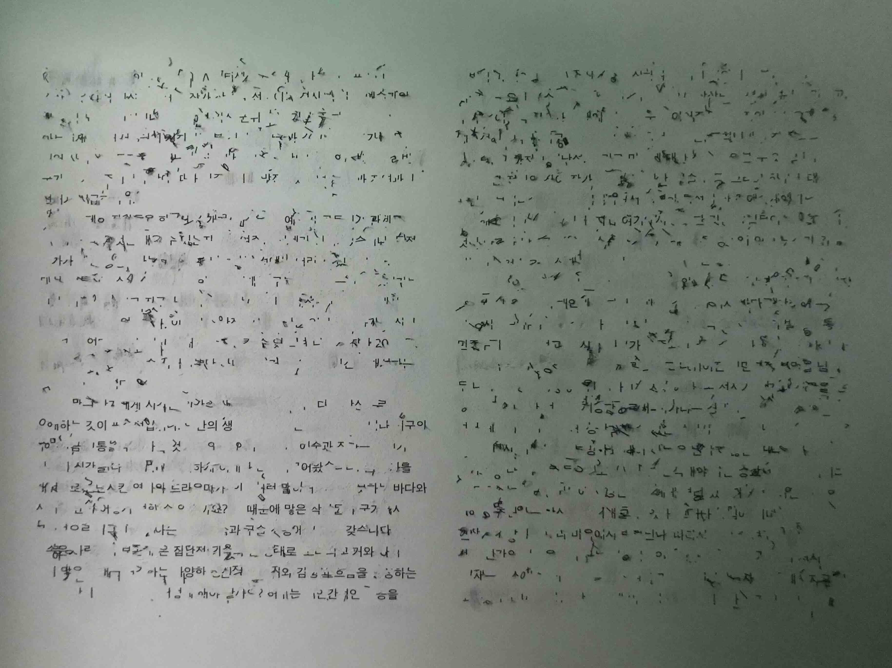
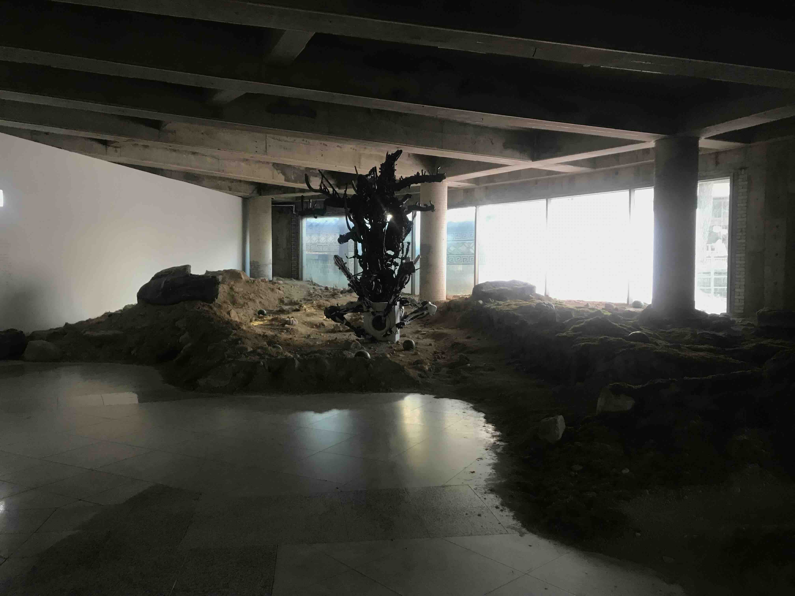
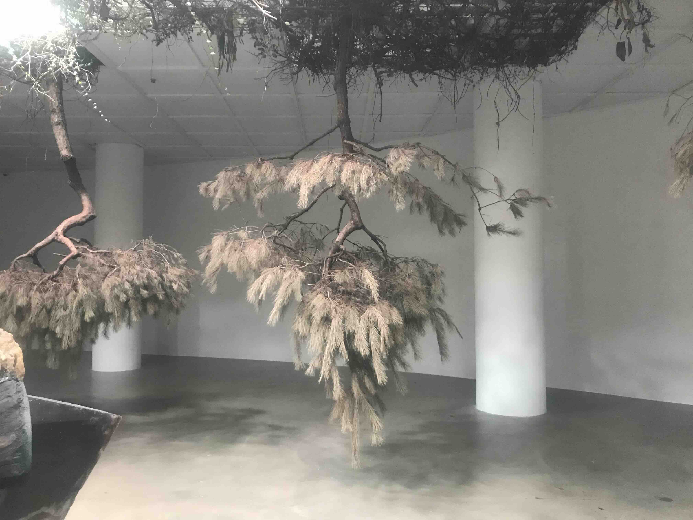
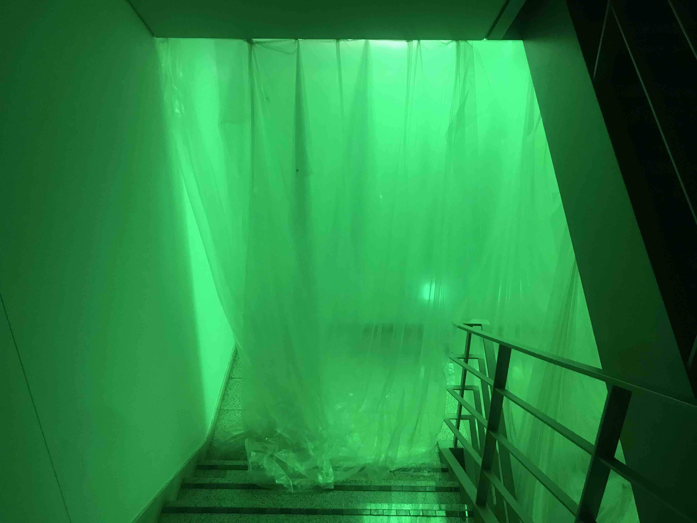

“When I speak of The Language of the Enemy, I’m pointing toward a deep prehistory of meaning-making. We, Homo sapiens, didn’t invent symbolism in isolation; we evolved alongside other human relatives—Neanderthals, Denisovans—and in those encounters, hostile and intimate, competitive and collaborative, something passed between us. Tools, gestures, fire—but also the first sparks of symbolic thought, of meaning creation. The exhibition’s title gestures to that paradox: the enemy—this manifestation of pure otherness—is alien and threatening, yet also the mirror through which we first recognized ourselves. Today, I think we are again at such a threshold—facing new “others,” synthetic intelligences, whose languages we barely comprehend. These intelligences are here, coexisting with us; we pass knowledge to them, even as we sense that, in doing so, we may be preparing for our own disappearance.” - adrian villar rojas